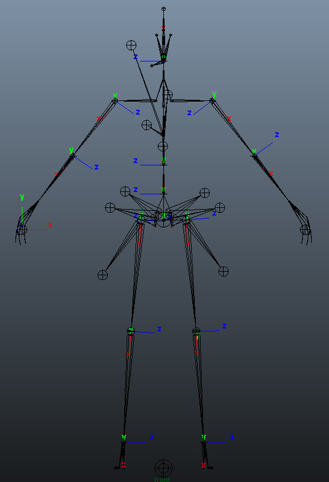
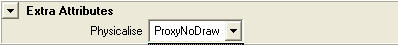
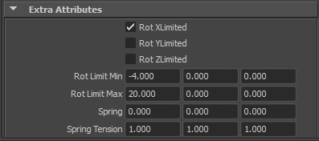
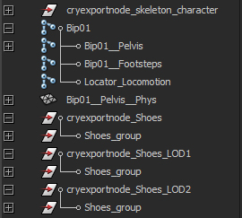

Overview
This section covers how to create characters and export from Maya.
Required Files
Before you read further, be sure that you have downloaded the compressed file at the top of DCC Setup (animated) for reference.
For the most part, CHR is the CRYENGINE character file format. There is also CGA, which will be mentioned later. For a complete overview of the file formats used in CRYENGINE, see Art Asset File Types.
In addition to dealing with the SDK example files, this tutorial also has notes for those creating their own characters from scratch.
File Layout
Important Note
Naming of bipedal hierarchies does not need to match 3ds Max. This is only necessary if you want to make use of the automated IK for legs and even this can be changed in the file in which you define the parameters for IK, the file.
Given that Maya does not allow spaces in names you can use a double underscore (__) as a space, this way the RC will convert it automatically when the character is exported.
Important note to Maya 2011+ users
Changes were made to the weight painting tool so now you have to make sure you have no weights with values over 1, if you do you will likely receive a error upon export. This can be fixed by changing the weight normalization methods.

The joint orientations should be aligned as described:
- Arms: z= forward, X= downward along arm
- Legs: z= forward, x= downward along legs
- Eyes: Y= forward, z= along vertical axis
Character Body Layout
The following is a brief explanation of the nodes in this Maya file. There are render meshes and a live deforming skeleton.
Render Meshes
- These are the mapped character geometries that you see in the game.
- The LOD's (Level of Detail) are meshes with a lower polygonal resolution that automatically fade in based on your distance from the character in the game world.
- Render Mesh Nodes:
- cryexportnode_Shoes
- cryexportnode_Shoes_LOD1
- cryexportnode_Shoes_LOD2
Things to keep in mind when creating the render mesh of a character:
- Its pivot should be centered.
- It should have no transformations applied to it (pos, rot, scale).
- If it does, apply freeze transforms before you start.
- Make sure the model matches the joints in the skeleton.
- The live deforming skeleton should be in its bind pose when you apply the skinning.
When creating your own character, you do not need to match your render mesh to the SDK skeleton. However, keep in mind that this means your character cannot use the existing animation set.
Model your character to fit this skeleton, then use Skin (or Physique) to weight your render meshes to the deforming skeleton.
Live Deforming Skeleton
- If you want bones to act like they are outside the skeleton, you can change their inheritance transform in the Attribute Editor then in Transform Attributes.
- This is the skeleton that deforms the render meshes.
- The bone geometry of this skeleton is used for hit detection and physics in the live character (non-ragdoll).
- The materials applied to this skeleton are used for hit detection, to tell the engine what part of the character you have hit.
- There are attachment nodes in this hierarchy.
- Example: alt_weapon_bone01; this is where the weapon will be attached in the engine.
- This is a basic Biped Skeleton, but other than attachment nodes, there are some additional nodes used for automatic foot plant and gait detection
- Bip01LHeel and Bip01LToe0Nub on the left foot (also present on the right foot). Keep in mind though that naming is only dependent on what was defined in the chrparams file. This is just a general recommendation used.
- Live Deforming Skeleton Nodes:
- Hierarchy of nodes under and including Bip01.
Head Layout
The following is a brief explanation of the nodes in this Maya file. There are characters, basic meshes and a deforming skeleton.
Render Meshes
- This is the mapped character geometry that you see in the game.
- Render Mesh Nodes:
- Humanoid_Head
Deforming Skeleton
- This skeleton hierarchy must not have more members than the deforming skeleton of the character you will attach the head to.
- The skeletons do not have to match, but this SLAVE skeleton must have fewer bones than the MASTER skeleton.
- Arbitrary geometry is supported, but could slow performance.
- Deforming Skeleton Nodes:
- Hierarchy of nodes under and including Bip01
Deforming and Phys Skeletons
Character assets are broken up into the main character file and the ragdoll/LOD1 file. Each file has a deforming and phys skeleton. It is critical to understand the role of each skeleton in each file.
The live deforming and live phys skeleton in the main file (LOD0 and 1) store the hit detection and physics properties for the live skeleton, while the ones in the LOD1 max file store the hit detection and phys properties for the ragdoll.
Basic Setup
Exporting Characters is fairly simple given that everything is named correctly.
- Start out by creating your Skeletal structure, eg. Bip01
- For each LOD you require in your character create a new 'cryexportnode'. for example:
- cryexportnode_Shoes
- cryexportnode_Shoes_LOD1
- cryexportnode_Shoes_LOD2
- Create your characters skin for each LOD level under a new cryexportnode.
- cryexportnode_Shoes_LOD1
- Shoes_LOD1_group
- shoe
- Shoes_LOD1_group
- cryexportnode_Shoes_LOD1
- Don't forget to build your physicalized skeleton and parent it to your joints. Naming should have _phys at the end of the mesh-skeleton and a physicalized material should be applied (this is how the engine recognizes your physical proxy). The names are used for the phys mesh separate from the skeleton with its appropriate parent frames. The exporter recognizes the names and matches upon export


- Ensure that each LOD's skin geometry is bound to the skeleton correctly and animating the skeleton animated each LOD's skin.
- Select a 'cryexportnode' group.
- Click the export button on the 'Crytek' toolbar to open the 'Crytek Export' dialog.
- Click the 'Add Attributes' button. After doing so you will notice that attributes will appear on your joints as so:

These can be used to modify the way your Ragdoll skeleton reacts in-game.
- Select the 'Character (.CHR)' file type from the drop-down that appears in the `Node Options`section. You can also find this drop-down in the 'Extra Attributes' section in Maya's Attribute Editor.
- Ensure the 'Do Not Merge' option is checked
- Click the 'Export' button on the 'Crytek Export' dialog.

Y-up/Z-Up, SceneRoot node, root bone
The root bone of a character in both Maya and 3dsMax must have the following position/orientation: position is (0, 0, 0) in the scene, the node's Z axis points up (direction from character's toes to character's head), and the node's Y axis points forward (direction in which character is facing).
Note that the requirement to have the root bone at position (0, 0, 0) acts only when you export a character (.chr/.skin). Exporting animations doesn't have such a requirement.
If you work with Y-up (instead of Z-up) in Maya then you should create an empty group node called SceneRoot so that your characters are exported correctly. SceneRoot node is a node on the top of the scene hierarchy, it should have no parent and no children. The node should have position (0, 0, 0), it should have its Z axis pointing up in the scene, and the Y axis pointing in the direction in which the character is facing.
SDK 3.8 and higher contain Maya scripts for creating SceneRoot and the scripts are accessible through Maya's Crytek toolbar: TOOLS / CryTools / [Create SceneRoot xxxx].
Please check the table below to make sure that your scene/character are set up correctly.
| Scene configuration | Required orientations of SceneRoot and root bone |
|---|---|
| Maya setup is Y-up SceneRoot does not exist (not recommended) | Root bone's Z axis: same as scene's Y axis (points up) Root bone's Y axis: same as scene's negative Z axis |
| Maya setup is Y-up SceneRoot exists | SceneRoot's Z axis: same as scene's Y axis (points up) Root bone's Z axis: same as SceneRoot's Z axis and scene's Y axis (point up) Root bone's Y axis: same as SceneRoot's Y axis |
| Maya setup is Z-up SceneRoot does not exist (not recommended) | Root bone's Z axis: same as scene's Z axis (points up) Root bone's Y axis: same as scene's Y axis |
| Maya setup is Z-up SceneRoot exists | SceneRoot's Z axis: same as scene's Z axis (points up) Root bone's Z axis: same as SceneRoot's Z axis and scene's Z axis (point up) Root bone's Y axis: same as SceneRoot's Y axis |